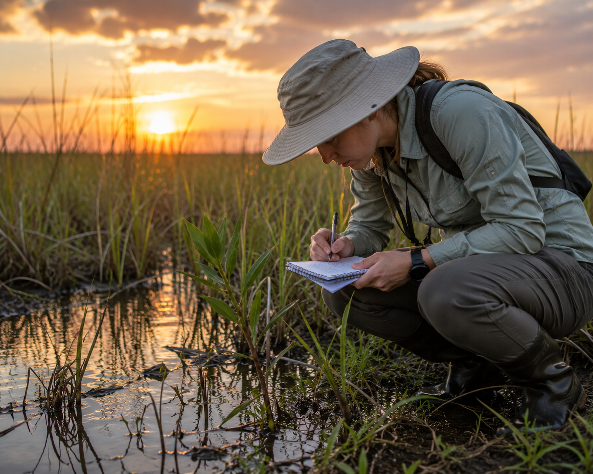
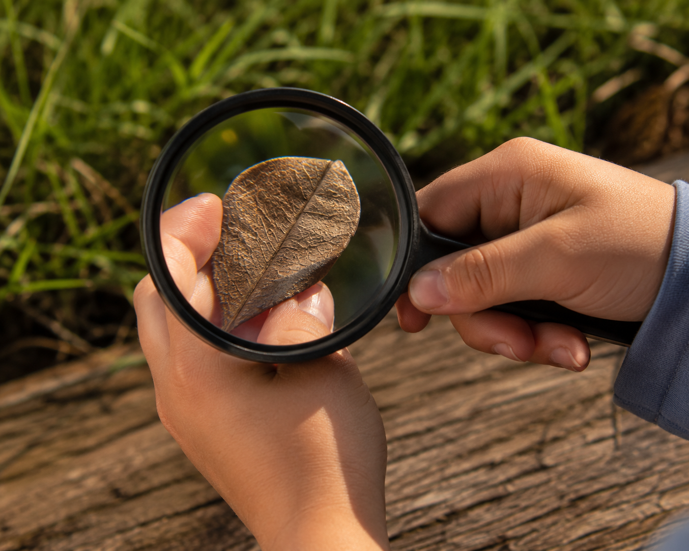

Hold this question in your mind as you work through the lesson. By the end, you should be able to answer it using evidence!
Imagine you're standing at the edge of a marsh in Everglades National Park at sunrise. The air is warm and the water is still. You hear something splash nearby — but you can't see what made the sound yet.
Before any scientist goes to work, they stop and look — really look. That's what you're going to practice right now. Look at a natural object nearby — a leaf, a rock, a pinecone, anything from outside — and just notice.
There are no wrong answers here. Scientists always start by slowing down, looking carefully, and asking questions. We'll come back to your ideas at the end of the lesson!
Scientists have specific words for what they do. Learn these six words before you dive into the lesson — you'll see them everywhere! Tap each card to flip it and read the definition.
Copy this sentence carefully into your science notebook:
"Scientists use their senses to observe the natural world, record what they notice, and use evidence to answer questions."
An observationObservationSomething you notice using your five senses — no guessing. is anything you notice using your five senses: sight, sound, smell, touch, and sometimes taste. When you look at a flower and say "it has five yellow petals," that's an observation. You can see it directly. Nothing is being guessed — just noticed.
An inferenceInferenceA conclusion you draw from your observations — based on clues, not direct sight. is different. It's a conclusion you draw based on your observations. If you're hiking near a pond and you see muddy footprints in the soil, you might infer that an animal came to drink there last night. You didn't see the animal — you figured it out from the clues your senses gave you.
Both matter in science. Observations give you the evidenceEvidenceInformation gathered through observation that helps explain what's happening in nature.. Inferences help you figure out what that evidence means.
Scientists don't rely only on their bare senses. They use tools to notice things they couldn't catch on their own. Here are some of the most common ones:
Scientists who work in national parks like Everglades or Biscayne Bay carry all of these tools into the field every single day. Without them, important details would disappear before anyone could write them down.
Writing things down is one of the most important things a scientist does. Without a record, you can't look back at your observations, spot patterns over time, or share what you found with another scientist on the other side of the world.
In the Everglades, field biologists go out before dawn with their notebooks. They sketch what they see, write measurements, and note the date, time, and weather. A careful sketch with labels can tell you more than a blurry photo. And a number recorded on paper — the temperature, the water level, the number of birds in a flock — becomes dataDataInformation collected through observation and measurement that scientists use to find patterns.. Data is what scientists use to spot patterns. Patterns help them answer questions.
Real-World Connection: In 2016, a botanist working in Everglades National Park discovered a new species of orchid — not in a lab, but by noticing something slightly different while counting plants during her regular rounds. She had been keeping careful field notes for years. Without those notes, there would have been nothing to compare.

Scientists use their senses and tools to make observations — and they write everything down. An observation is something you notice directly. An inference is the conclusion you draw from what you noticed. Evidence is what connects those two things together.
This is how science works: careful observation → evidence → reasoned inference → new questions. It never really stops.
Curious? Go Deeper
Field scientists have been keeping notebooks for hundreds of years. When Charles Darwin sailed around the world on the HMS Beagle in the 1830s, he filled dozens of notebooks with observations — sketches of finch beaks, descriptions of rock layers, notes on plants he'd never seen before. Those notebooks became the foundation of one of the most important ideas in science: natural selection.
Today, scientists working in places like Everglades National Park keep the same habit. Field biologists arrive before sunrise, move quietly through the marsh, and write down everything: the number of alligators basking on a particular bank, the water temperature, whether a certain orchid has bloomed yet. Over years, those notebooks tell a story that no single observation could tell on its own — they reveal patterns, changes, and connections that only become visible when you look back.
Here's something to think about: if you kept a nature notebook for an entire year — recording what you saw outside your window each week — what patterns might you notice? What questions might your own observations raise?
You'll need: Your science notebook, pencil, colored pencils, and one small object — a leaf, a rock, a coin, a piece of bark, or anything interesting you can hold in your hand. A magnifying glass is great if you have one.

Follow each step carefully. Pause between steps to really look and think before writing.
Choose your object. Pick one small object and set it in front of you. Don't pick it up yet — just look at it for 20 seconds without writing anything. Let your brain slow down.
Observe carefully. Now pick it up. Look at it closely — turn it over, feel the texture, tap it gently, smell it. If you have a magnifying glass, use it. Write at least 5 observations in your notebook. Start each one with "I see," "I feel," "I hear," or "I smell."
Sort your thinking. Read back through your list. Put a circle next to anything that is a pure observation — something you actually sensed. Put a box next to anything that might be an inference — something you're figuring out or guessing based on what you sensed.
Make your inference. Based on everything you observed, write one inference about your object in a complete sentence. What do you think it is used for? Where might it have come from? Explain which observations led you to that conclusion.
In your science notebook, organize what you found. A good scientist doesn't just write "it worked" or "I looked at it" — they write down exactly what they noticed and exactly what they concluded from it.
Tell the story of your investigation from beginning to end — what you observed first, what surprised you, and what you eventually concluded. Use your notes to help you.
Think through each question on your own. Write your answers in your science notebook before moving on.
🔍 Part A — Sort It Out
Read each description and choose the correct vocabulary word from the word bank. Write the answer next to the number in your notebook.
Word Bank: observation · inference · evidence · data · science notebook · scientist
🚀 Part B — Short Answer
Answer each question in complete sentences. Use your science vocabulary!
Why do you think scientists spend so much time observing carefully before they try to explain anything?
What do you think?
💡 Start with: "I think scientists observe carefully first because…"
What did you observe or learn that supports your thinking?
💡 Start with: "I know this because the lesson showed me that…"
Why does that make sense?
💡 Start with: "This makes sense because without careful observations, scientists would…"
📚 Try to use at least one of these words in your answer: observation, inference, evidence
🎨 Part C — Draw & Label
Draw yourself as a field scientist working outdoors — anywhere in nature. Show yourself using at least 2 tools. Label what you're observing, the tools you're using, and write a small arrow pointing to one thing you might infer from what you see. Use color!
When your checklist is complete, submit everything on Canvas. Type, upload a photo, or record a video — whichever works best for you!